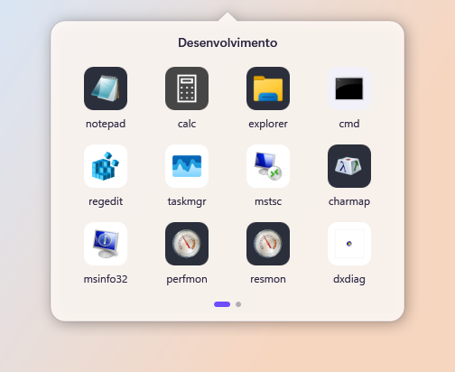
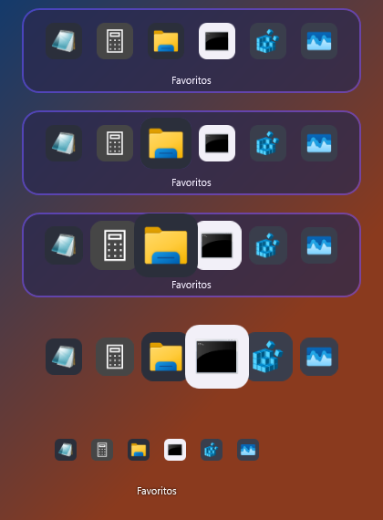
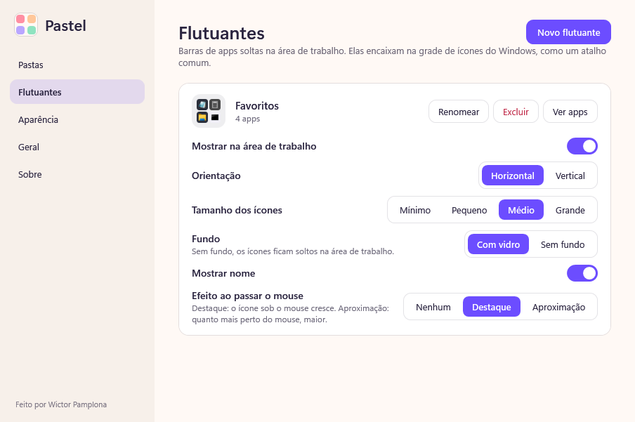
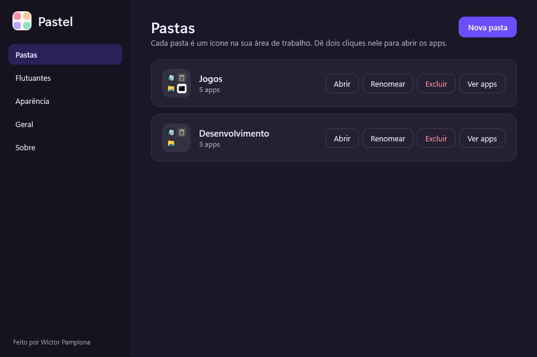
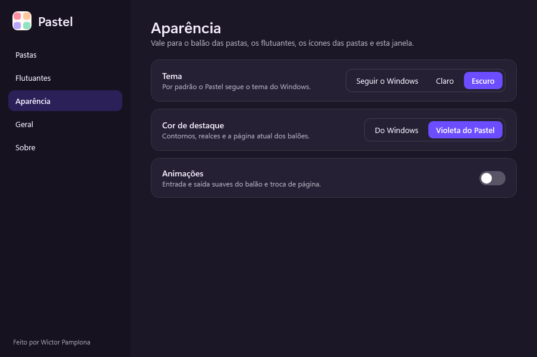

A pasta do celular, no seu PC.
O Pastel junta seus apps em pastas na área de trabalho, do jeito que o celular faz. Arraste os atalhos pra dentro, dê dois cliques e pronto. Sem conta, sem internet, sem bagunça.
Windows 10 ou 11. O instalador tem 48 MB, já leva tudo dentro, não pede administrador e funciona sem internet. O Pastel ainda tá em beta, então pode ter um bug ou outro escondido.

Sua tela, arrumada.
Três passos, e o Pastel não pede que você mude nenhum hábito.
Crie uma pasta
Botão direito na área de trabalho, Pastel, Nova pasta. Ela vira um ícone com a miniatura dos apps de dentro.
Arraste os apps
Solte os atalhos no ícone. Eles saem da área de trabalho e ficam guardados na pasta. Quer um de volta? É só arrastar pra fora.
Abra com dois cliques
Um balão abre junto do ícone, com a ponta apontando pra ele. Passou de 12 apps? Vira página, como no Menu Iniciar.
Pouca coisa, bem feita.
O Pastel faz uma tarefa e tenta fazer ela direito.
Balão com páginas
Roda do mouse, setas do teclado ou os pontinhos. A troca de página desliza, e dá pra desligar as animações.
Flutuantes
Barras de apps soltas na área de trabalho, encaixadas na grade de ícones. Com vidro ou sem fundo, com ou sem nome, e até efeito de dock: quanto mais perto do mouse, maior.
Botão direito em tudo
Em qualquer arquivo, pasta ou atalho: Pastel, Enviar para pasta ou flutuante. Ou crie uma nova na hora.
Segue o seu tema
Claro, escuro e a cor de destaque do seu sistema. Se preferir, o violeta do Pastel.
Ícones padronizados
Quadrados arredondados e chapados, como no Android. Nada de ícone com borda esquisita no meio do balão.
Nada se perde
O que sai da área de trabalho fica guardado e volta quando você quiser. Excluir uma pasta devolve tudo pro lugar.
Do seu jeito.
Cada flutuante tem tamanho, fundo, nome e efeito próprios. Tudo se ajusta na janela de configurações.




Baixar o Pastel.
É grátis e vai continuar. Versão 0.1.0, beta.
Instalador
- 48 MB. Já leva o .NET dentro: não baixa nada, não precisa de internet nem de administrador, e instala só para o seu usuário.
- O Windows pode avisar “editor desconhecido”, porque o instalador ainda não é assinado. Clique em Mais informações e depois em Executar assim mesmo.
- Para remover, é só desinstalar pelo Windows. Seus apps movidos ficam guardados.
Pacote .tar.gz
- Extraia e rode
./install.sh. Não usasudoe não mexe no sistema;./uninstall.shremove tudo. - Ainda sem teste num KDE de verdade. Foi provado num Ubuntu, mas o menu do Dolphin e a bandeja dependem do seu KDE. Se algo se comportar diferente, abra uma issue.
- Na sessão Wayland, o balão abre no meio da tela em vez de junto do ícone.
Quer conferir o que baixou? Cada versão traz o arquivo SHA256SUMS.txt com as impressões digitais.
Perguntas.
Preciso de conta ou de internet?
Não. O Pastel funciona offline e não pede login. Por padrão ele consulta o GitHub de tempos em tempos só para avisar de versões novas (nada seu é enviado), e você pode desligar isso em Configurações > Geral. Nem o instalador do Windows precisa: ele já leva tudo o que o app usa.
Quanto custa?
Nada. O Pastel é grátis, o código é aberto (licença MIT) e vai continuar assim.
Os meus atalhos somem?
Não. Quando você solta um atalho numa pasta, ele sai da área de trabalho e fica guardado pelo Pastel. Remover da pasta, ou excluir a pasta, devolve o atalho pra área de trabalho.
O Pastel aparece nos “Recentes” do Menu Iniciar?
Ele pede ao Windows para não aparecer, e apaga as entradas que o Explorer criar mesmo assim, logo depois de você abrir uma pasta.
O Pastel mexe no meu sistema?
Só no seu usuário: ele registra o tipo de arquivo das pastas e os menus do botão direito (no Windows, em HKCU; no Linux, em arquivos .desktop na sua pasta). Nada é gravado no sistema, e a desinstalação remove tudo isso.
Onde ficam os meus dados?
No Windows, em %AppData%\Pastel. No Linux, em ~/.config/pastel e ~/.local/share/pastel.
Por que o Windows avisou “editor desconhecido”?
Porque o instalador ainda não tem uma assinatura digital, que custa caro para um projeto pequeno. O código está todo aberto no GitHub, e você pode conferir a impressão digital do arquivo no SHA256SUMS.txt.
Achei um bug. E agora?
O Pastel ainda tá em beta, então acontece. Abra uma issue no GitHub contando o que aconteceu. Se der, anexe um print.